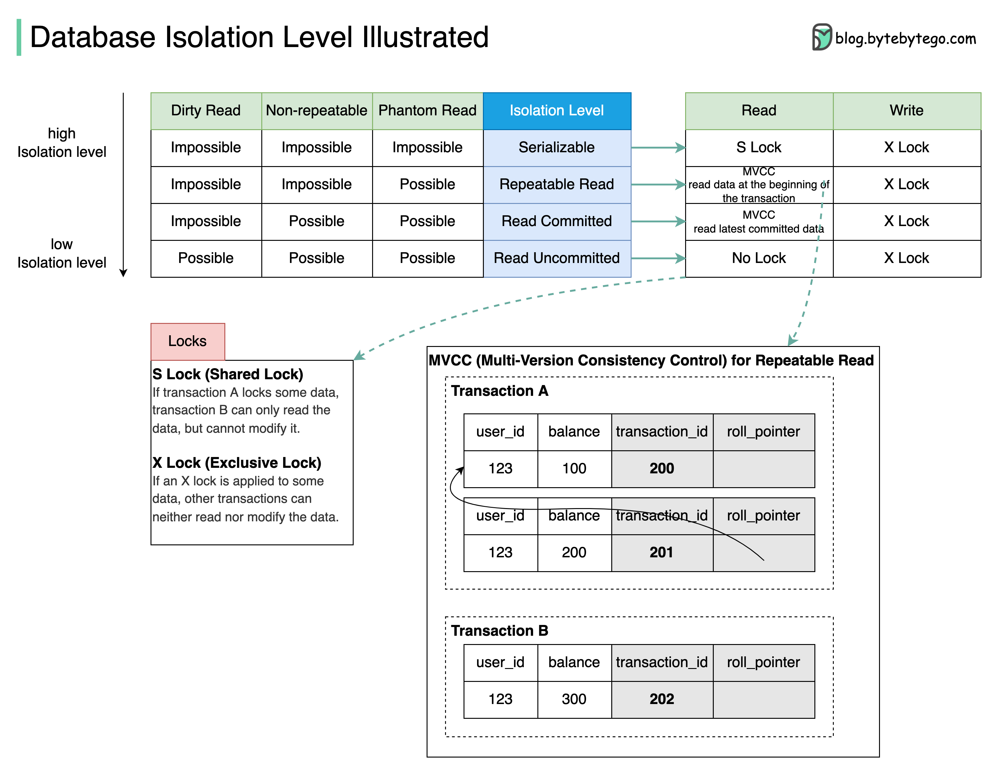

Database isolation allows a transaction to execute as if there are no other concurrently running transactions.
The diagram above illustrates four isolation levels.
Serializable: This is the highest isolation level. Concurrent transactions are guaranteed to be executed in sequence.
Repeatable Read: Data read during the transaction stays the same as the transaction starts.
Read Committed: Data modification can only be read after the transaction is committed.
Read Uncommitted: The data modification can be read by other transactions before a transaction is committed.
The isolation is guaranteed by MVCC (Multi-Version Consistency Control) and locks.
The diagram takes Repeatable Read as an example to demonstrate how MVCC works:
There are two hidden columns for each row: transaction_id and roll_pointer. When transaction A starts, a new Read View with transaction_id=201 is created. Shortly afterward, transaction B starts, and a new Read View with transaction_id=202 is created.
Now transaction A modifies the balance to 200, a new row of the log is created, and the roll_pointer points to the old row. Before transaction A commits, transaction B reads the balance data. Transaction B finds that transaction_id 201 is not committed, it reads the next committed record(transaction_id=200).
Even when transaction A commits, transaction B still reads data based on the Read View created when transaction B starts. So transaction B always reads the data with balance=100.